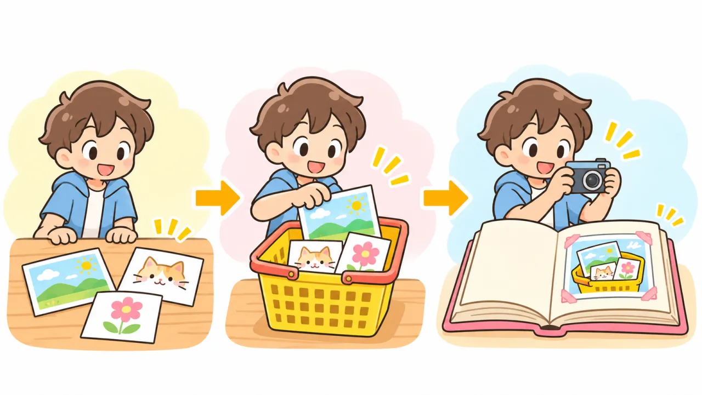
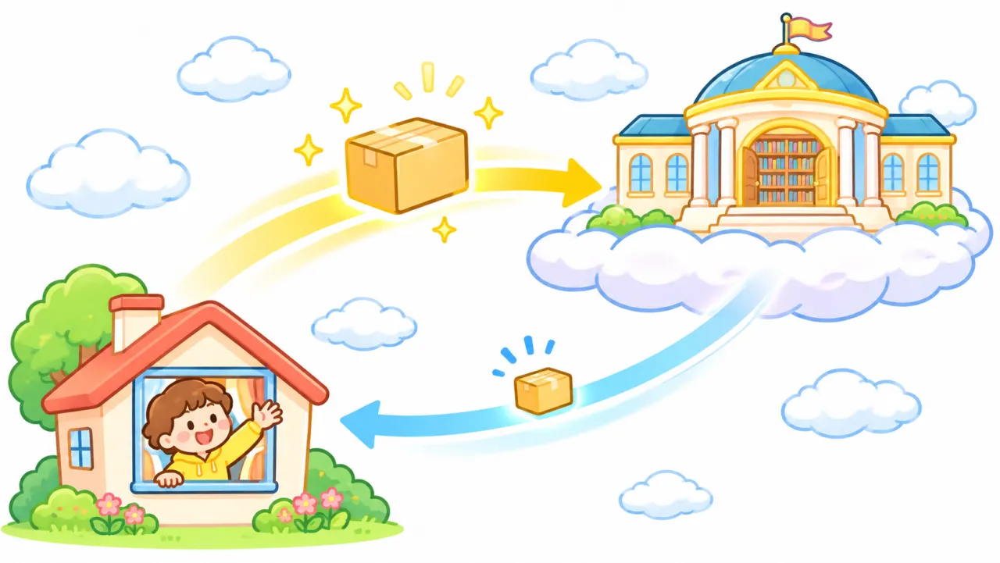

小学生でもわかる Git と GitHub とホスティングのしくみ ― 隠しフォルダ「.git」の正体から、サイトが届くまで
このページでは、いつも打っている git add git commit git push がパソコンの中で本当は何をしているのかを、本物のフォルダの中身を見ながら説明します。後半では、作ったページが GitHub Pages で世界中から見られるしくみ（ホスティング）も、本物のデータでのぞいてみます。
※ このページに出てくるコマンドの結果は、説明のために実際に作ったフォルダで本当に実行した出力です（ユーザー名とメールだけ例の h-kondo に置き換え、「←」の説明を書き足しています）。
1. バージョン管理ってなに？
バージョン管理とは、作品の「その時点の状態」を、何回でもセーブしておけるしくみのことです。ゲームのセーブポイントと同じです。
バージョン管理がないと…
セーブのしくみがないと、こんなフォルダになりがちです。
index.html
index_コピー.html
index_最終.html
index_最終2.html
index_本当に最終.html
index_本当に最終_先生に出す用.html ← どれが最新？ 何を変えたの？Git を使うと、ファイルは index.html の1つのまま、「いつ・だれが・何を変えたか」が全部記録されます。間違えても前のセーブに戻れるので、安心してどんどん書き直せるのがいちばんの良さです。
2. Git と GitHub はちがうもの
名前が似ていますが、別のものです。
| Git（ギット） | GitHub（ギットハブ） | |
|---|---|---|
| なに？ | セーブするための道具（ソフト） | セーブデータを預けておくインターネット上の場所（サービス） |
| どこにある？ | 自分のパソコンの中 | どこか遠くにあるパソコン（GitHub という会社のもの） |
| たとえると | 自分の机にあるセーブノート | 町の大きな図書館の保管庫 |
| インターネットは？ | なくても使える | 必要 |
つまり、セーブ（add・commit）は自分のパソコンの中だけで行われ、push した時に初めて GitHub に送られる、という順番です。
3. 本物のフォルダをのぞいてみよう
セーブデータは、どこに保存されているのでしょうか？ 答えは、作業フォルダの中にある「.git」という隠しフォルダです。
ファイルの画面で見ると
Ubuntu の「ファイル」アプリで ch03 フォルダを開くと、ふだんは課題のフォルダしか見えません。Ctrl + H を押すと、隠れていた .git が現れます（もう一度押すと隠れます）。
ターミナルで見ると（本物の出力）
ls -la は「隠しファイルも含めて、くわしく一覧を出す」コマンドです。git init の前と後で比べてみます。
$ ls -la
drwxr-xr-x 3 h-kondo staff 96 Nov 9 11:09 .
drwxr-xr-x 3 h-kondo staff 96 Nov 9 11:09 ..
drwxr-xr-x 4 h-kondo staff 128 Nov 9 11:09 03-18$ git init
$ ls -la
drwxr-xr-x 4 h-kondo staff 128 Nov 9 11:09 .
drwxr-xr-x 3 h-kondo staff 96 Nov 9 11:09 ..
drwxr-xr-x 9 h-kondo staff 288 Nov 9 11:09 .git ← 増えた！
drwxr-xr-x 4 h-kondo staff 128 Nov 9 11:09 03-18git init がやっていることは、この .git フォルダを作るだけです。「このフォルダの中身をセーブしていきますよ」というセーブ用の箱を置いた、ということです。
.git フォルダは消したり、中のファイルを手で書き換えたりしないでください。消すと、それまでのセーブ（履歴）が全部なくなり、GitHub とのつながりも切れます。見るだけなら大丈夫です。
4. .git の中には何が入っている？
$ ls -F .git
HEAD config description hooks/ index info/ objects/ refs/名前はむずかしそうですが、役割はシンプルです。まずは色をつけた4つだけ覚えれば十分です。
| 名前 | たとえると | 中身 |
|---|---|---|
objects/ | 📸 写真アルバム | セーブしたファイルの中身が全部しまってある。セーブデータの本体 |
index | 🧺 買い物カゴ | 「次にセーブするもの」のリスト。git add すると中身が入る |
HEAD | 🔖 しおり | 「今どのセーブのところにいるか」の目印 |
config | 📒 住所録 | このフォルダの設定と、GitHub の住所が書いてある |
refs/ | 付箋 | ブランチ（main など）が、どのセーブを指しているかのメモ |
hooks/ info/ description | おまけ | 授業では気にしなくてOK |
ちなみに、この時点での .git の大きさは 120KB（写真1枚より小さい）でした。
5. add と commit で、.git の中では何が起きている？

git add と git commit は、自分のパソコンの中の .git フォルダに書き込んでいるだけです。インターネットには一切つながっていません。本当にそうなっているか、.git/objects の中のファイルの数を数えて確かめてみます。
| やったこと | .git/objects のファイルの数 | 何が起きた？ |
|---|---|---|
git init 直後 | 0 個 | まだ空っぽのアルバム |
| git add . の後 | 2 個 | index.html と style.css の中身がしまわれた（＋カゴのリスト index ができた） |
| git commit の後 | 5 個 | フォルダの地図2枚と、「セーブ記録」1枚が増えた |
$ find .git/objects -type f
.git/objects/16/f776aea4ba394664bde8af6d924ba92f097b53
.git/objects/6c/8438155fa63290b84c758ee7df165d718409a9
.git/objects/74/74a5758ea8852f6a6a6fd433cc52bdc0036562
.git/objects/a8/b442bba55617f7b1169374a9e6af115565a930 ← これが「セーブ記録」
.git/objects/ff/a9c076f19fb4ae50fef5cac373f93b0377c053ファイル名がぐちゃぐちゃの英数字なのは、中身から自動で作られた「指紋」のような番号（ハッシュ）だからです。中身が1文字でも違えば、まったく違う番号になります。
セーブ記録の中身をのぞいてみる
ファイルの中身は機械用に圧縮されているので、そのままでは読めません。
$ xxd .git/objects/16/f776aea4ba394664bde8af6d924ba92f097b53 | head -2
00000000: 7801 2b29 4a4d 5530 3765 3034 3030 3331 x.+)JMU07e040031
00000010: 51c8 cc4b 49ad d0cb 28c9 cd61 2829 595a Q..KI...(..a()YZGit に「読める形で見せて」と頼むと、セーブ記録（コミット）の正体が分かります。
$ git cat-file -p HEAD
tree ffa9c076f19fb4ae50fef5cac373f93b0377c053 ← その時のフォルダの地図
author h-kondo <h-kondo@example.com> 1794190182 +0900 ← だれが・いつ
committer h-kondo <h-kondo@example.com> 1794190182 +0900
Complete 03-18 ← commit -m で書いたメッセージセーブ記録は、「この時のフォルダの地図」＋「だれが・いつ」＋「メッセージ」が書かれた、ただのメモでした。git config user.name で登録した名前が、ここに入ります（だから最初に名前の登録が必要なのです）。
そして、しおり（HEAD）はこう書いてあります。
$ cat .git/HEAD
ref: refs/heads/main ← 「main のところを見てね」
$ cat .git/refs/heads/main
a8b442bba55617f7b1169374a9e6af115565a930 ← main は、さっきのセーブ記録を指している6. .git と GitHub はどうつながっている？
では、自分のパソコンの .git と GitHub は、どうやってつながっているのでしょう？ 住所録（.git/config）を開いてみます。
$ git remote add origin https://github.com/h-kondo/ch03.git
$ cat .git/config
[core]
repositoryformatversion = 0
...
[user]
name = h-kondo ← git config で登録した名前
email = h-kondo@example.com
[remote "origin"] ← 「origin」という名前の送り先
url = https://github.com/h-kondo/ch03.git ← GitHub の住所！
fetch = +refs/heads/*:refs/remotes/origin/*git remote add origin … がやったのは、この住所録に GitHub の住所を1行書き足しただけです。git remote -v は、この住所を読んで表示しているだけです。
ポイント：.git は GitHub と「ずっとつながっている」わけではありません。
住所がメモしてあるだけで、ふだんは切れています。git push や git pull を打った、その瞬間だけ、住所あてに通信します。

| コマンド | 実際にやっていること |
|---|---|
| git push | 自分の .git/objects にあって、GitHub にまだ無いセーブを、住所あてに送る |
| git pull | GitHub にあって、自分の .git にまだ無いセーブをもらってくる |
| git clone URL | GitHub のセーブを .git ごと丸ごとコピーしてくる（別のパソコンで続きをやる時など） |
GitHub の側にも、実は同じ形のセーブデータ（.git の中身と同じもの）が置いてあります。push は「自分のアルバムの新しい写真を、図書館のアルバムにも貼ってもらう」ことです。だから、自分のパソコンが壊れても、GitHub から git clone すれば全部の履歴ごと取り戻せます。
Git の中に Git を作る（すでに .git があるフォルダの中で、さらに git init する）と、どの住所録が使われるか分からなくなって失敗します。くわしくは VS Code 手順書の「親のフォルダがすでに Git につながっていると失敗する」を見てください。
7. ホスティングってなに？
ホスティングとは、作ったファイルを「24時間ずっと電源が入っているパソコン」に置いてもらい、世界中のだれでも見られるようにすることです。この「ずっと動いているパソコン」をサーバーと呼びます。
自分のパソコンで開くのと、何がちがう？
自分のパソコンで open index.html | GitHub Pages で公開 | |
|---|---|---|
| アドレスの形 | file:///home/…/ch03/03-18/index.html | https://h-kondo.github.io/ch03/03-18/ |
| だれが見られる？ | 自分だけ（そのパソコンの前にいる人） | 世界中のだれでも |
| パソコンを閉じたら？ | 見られない | 見られる（サーバーは自分のパソコンとは別に動いている） |
| たとえると | 家の冷蔵庫にしまったケーキ | お店のショーケースに並べたケーキ |
クラウドやインターネット上というと、ふわふわしたものに聞こえますが、実際にはどこかの建物の中に本物のパソコン（サーバー）が置いてあり、電気で24時間動いているのです。「ホスティングする」とは、そのパソコンの場所を少し借りることです。GitHub Pages は、その場所を無料で貸してくれるサービスです。
8. GitHub Pages のうら側を、本物のデータでのぞく
この授業資料のサイト（itc-kondo.github.io）も GitHub Pages で公開しています。ブラウザでアドレスを打ってからページが届くまでに、何が起きているのかを本物のデータで見てみます。
① アドレスを「サーバーの番号」に変える（DNS ＝ インターネットの電話帳）
パソコン同士は、名前ではなく番号（IP アドレス）で相手を探します。名前から番号を調べるしくみを DNS といいます。電話帳で名前から電話番号を調べるのと同じです。
$ dig +short itc-kondo.github.io
185.199.108.153
185.199.110.153
185.199.109.153
185.199.111.153itc-kondo.github.io の正体は、185.199.108.153 などの番号でした。4つあるのは、1つが故障しても他で受け付けられるようにするためです。
② 近くの「配達用の倉庫」から届く（CDN）
サイトに来た返事の「送り状」（ヘッダー）を見ると、だれが届けてくれたのかが書いてあります。
$ curl -sI https://itc-kondo.github.io/class-materials/
HTTP/2 200 ← 「ページあるよ、どうぞ」
server: GitHub.com ← 元の持ち主は GitHub
via: 1.1 varnish ← 途中で配達用のしくみを通った
x-served-by: cache-itm1220075-ITM ← 実際に届けたサーバー（ITM ＝ 大阪伊丹空港の記号）ITM は空港の記号で、大阪（伊丹）のことです。つまりこのページは、アメリカにある GitHub の本部から毎回取ってきているのではなく、大阪にある配達用のサーバーから届いていたのです。このしくみを CDN（コンテンツ配信ネットワーク）といいます。GitHub Pages は、Fastly という会社の CDN を使っています。
※ どの配達サーバーが届けるかは、見る人の場所や時間によって変わります。自分のパソコンで同じ curl を打つと、ITM 以外の記号（東京なら NRT や HND など）が出ることもあります。ぜひ試してみてください。
まとめると、push したファイルは GitHub のサーバー（どこかの建物の中の本物のパソコン）に置かれ、そのコピーが世界中の配達サーバーに配られて、見る人の近くから届けられている、ということです。push してから公開ページに反映されるまで少し時間がかかるのは、この配達の準備をしているからです。
9. まとめ
| ことば | ひとことで |
|---|---|
| バージョン管理 | 作品を何回でもセーブして、前に戻れるしくみ |
.git | 作業フォルダの中の隠しフォルダ。セーブデータは全部ここにある |
| git init | .git を作る（セーブ用の箱を置く） |
| git add | カゴ（.git/index）に入れる。自分のPCの中だけ |
| git commit | アルバム（.git/objects）にセーブ記録を作る。自分のPCの中だけ |
| git remote add | 住所録（.git/config）に GitHub の住所を書く |
| git push | セーブを GitHub に送る。ここで初めてインターネットを使う |
| ホスティング | 24時間動いている本物のパソコン（サーバー）に置いて、みんなに見せること |
| GitHub Pages | GitHub が無料でやってくれるホスティング |
| DNS / CDN | 名前を番号に変える電話帳 ／ 近くから届ける配達用の倉庫 |
10. クイズ
答えはクリックすると出てきます。
Q1. git commit した時、インターネットは使われている？
使われていない。commit は自分のパソコンの .git の中にセーブ記録を作るだけ。インターネットを使うのは git push や git pull の時だけです。
Q2. ファイルの画面で .git が見えません。どうすればいい？
Ubuntu の「ファイル」アプリで Ctrl + H（隠しファイルの表示）。ターミナルなら ls -la。名前が「.」で始まるファイルはふだん隠れています。
Q3. .git フォルダを消すと、どうなる？
それまでのセーブ（履歴）と、GitHub の住所のメモが全部消えます。作業中のファイル（index.html など）は残りますが、ただのフォルダに戻ります。だから消してはいけません。
Q4. 自分のパソコンの電源を切ったら、GitHub Pages のサイトは見られなくなる？
見られます。サイトは GitHub のサーバー（どこかの建物で24時間動いている別のパソコン）から配られているからです。
Q5. git remote -v で表示される URL は、どこに書いてある？
.git/config（住所録）の [remote "origin"] のところ。git remote add がここに書き込んでいます。